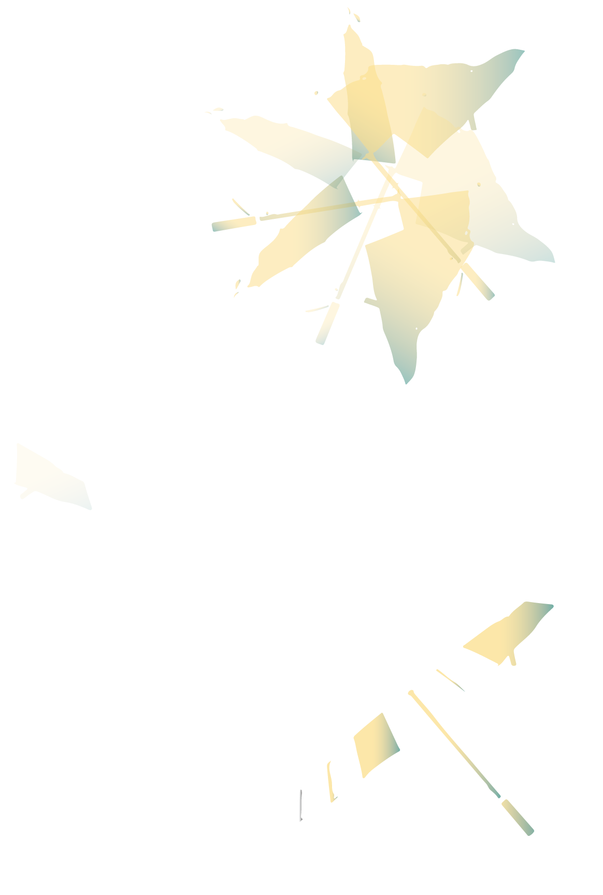

나는 학교를 다니는 고등학생이다. 학교 정문에서 을(를) 세 층정도 올라간 뒤 왼쪽으로 꺾으면 3학년 몇반이 나오는데 그 반은 우리반이다.
갑자기 농구장에 강다니엘이 온다는 소식이 들린다. 아이들이 다 그곳으로 몰려갔고 이(가) 나에게 같이 강다니엘을 보러가자고 한다.
오래 기다렸지만 나타난다고 했던 시간에 강다니엘이 나타나지 않는다. 나중에 들었는데 더 늦은 시간에 방문한다고 한다.
폰으로 라방을 확인해보니 현재 롯데월드에서 생방중이다. 많은 아이들이 기다리는 중이지만 수업시간이 가까워져 전력으로 각자 반으로 뛰어올라간다.
나도 가장 가까운 문으로 들어가 을(를) 올랐다.
그런데 내가 평소에 왔던 곳과 내부가 너무 달랐다. 공간이 너무나 헷갈린다.
층도 헷갈리고 여기가 어딘지 모르겠어서 멘붕이 온다.
일단 계단을 끝까지 올라가니 유치원에서 화재훈련할때 쓰는 미끄럼틀이 보인다. 안 쓴 지 오래됐는지 철골로 되어 낡고 녹슬어있다. 안전테이프도 쳐져 있다.
일단 길을 잃어버렸으니 다시 왔던 길로 돌아간다. 이미 수업시간이 다 지나서 속으로 망했다는 생각이 들었다. 웃기지만 미끄럼틀을 타고 원래 있던 곳으로 돌아간다.
미끄럼틀 앞에 늙은 이(가)계시는데 그 앞엔 연못같은 웅덩이가 보인다.
나에게 왜 거기있냐고 혼을 내신다. 근데 계속 대화를 하다보니 같이 웅덩이 속에 있는 물고기 고양이를 함께 보며 조화와 하모니에 대한 이야기를 나누기 시작한다. 그와 갑자기 친해진다.
이때부터는 그냥 수업가는것은 거의 포기상태. 또한 몰랐는데 내가 교복이 아니라 사복을 입고 있다. 지각에 사복에 교과서도 없어서 진짜 쌤한테 찍히겠구나란 생각이 스친다.
평소 범생이로 살았는데 범생이와 문제아는 별로 큰 차이가 없구나 이런 사소한 것들로도 나뉠 수 있는 거구나 싶다. 다시한번 평소에 지나는 문으로 들어가서 엘리베이터 앞으로 갔다.
엘리베이터를 타니 와(과) 경찰 같아 보이는 남성 두 명과, 키작고 안경쓴 대학원생 같은 남자분이 한 명 타고있다.
학교 엘리베이터에 그들이 왜 있는진 모르겠으나 일단 같이 탄다. 그런데 갑자기 엘리베이터가 무한정 내려가기 시작한다.
10층에서... 1층.. 또 10층에서.. 1층
다들 당황에서 초면이지만 의논을 시작한다. 그런데 내가 옛날에 이 현상을 겪은 기억이 있어 이 현상에 대한 해결책을 말하기 시작한다.
일단 그 방법을 써보자! 결정하고 시행하니 억지로지만 점점 엘리베이터 문이 열린다. 열린 문틈 사이로 보이는 풍경은 도로가이다.
우리가 탄 엘리베이터가 트럭에 실려서 시내 한복판을 달리고 있음을 깨닫는다. 이게 뭥미 하면서 여기가 어디지 하고 시내를 보는데 평촌 학원가처럼 보인다.
사람들한테 "평촌학원가에요! 제가 여기서 입시했어요!!" 라고 흥분해서 외친다. 하지만 자세히 보니 아니어서 머쓱함을 느낀다.
그 광경을 보면서 앗싸 수업 못들어간 합리적인 사유 생겼다하고 내심 기쁘다. 결석 증거 남겨두려 & 위치를 사람들에게 알리려 시내 광경 사진을 찍는다.
시내시내한 곳들을 달리고 있고 밖으로 나가려하는데 옆에 달리고 있는 차에서 갑자기 저격을 시작한다. 매섭게 총알이 날라온다. 엘리베이터에서 나가려고 문을 열었다가 총격전이 펼쳐지자 다시 닫았다.
살짝씩 열면서 경찰같은 분이 맞대응 하셨고... .. .